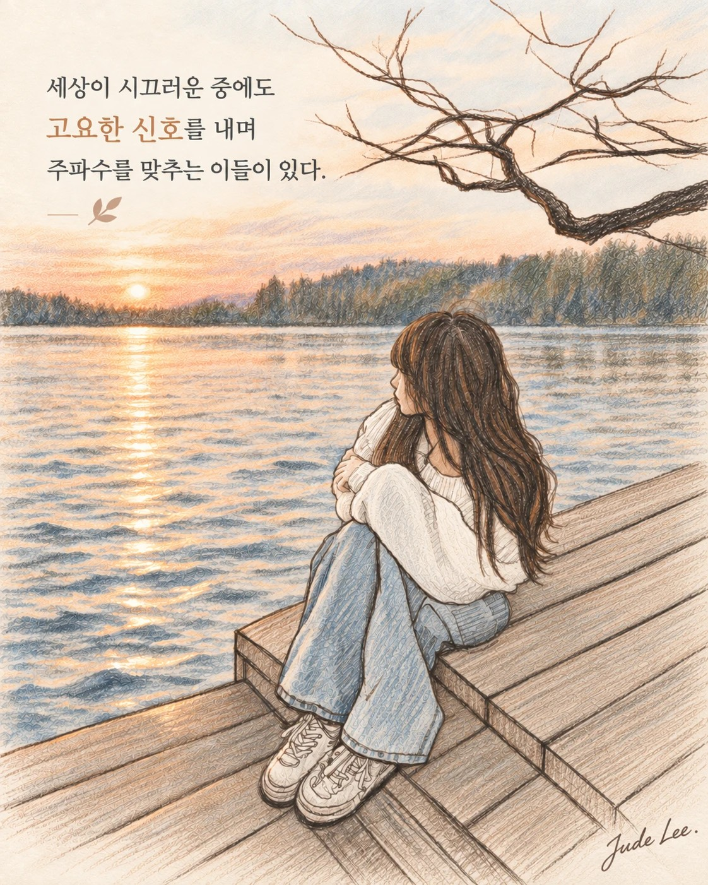
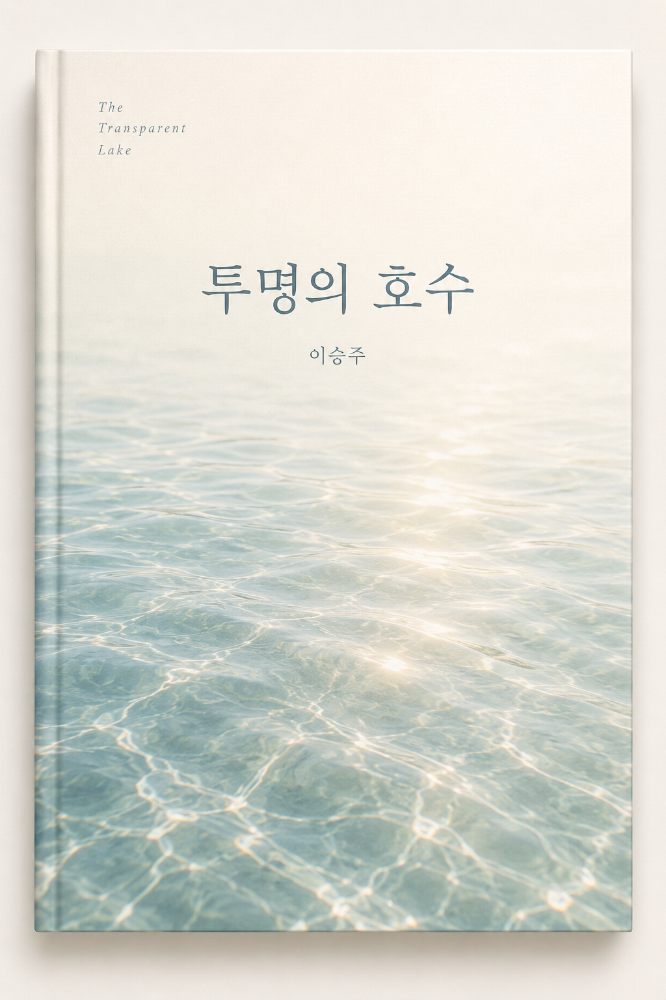

Open Pages
OPEN PAGE 09
투명의 호수
책의 표지를 다시 보여 주기보다, 그 안에서 시작된 생각과 질문을 한 페이지씩 꺼내 놓습니다.
책을 쓴다면 내가 읽고 또 읽고 싶은 책을 쓰리라. 그림을 그린다면 내 곁에 가까이 두고 항상 감상하고 싶은 그림을 그리리라. 누군가를 사귄다면 언제나 마음에 두고 그리워할 사람을 사랑하리라.
서문
이 책을 당신에게 드리는 이유
이 글들은 처음부터 한 권의 책을 구상하여 쓴 것이 아닙니다. 그때그때 마음에 남은 장면들을 떠올리며 하루가 다 지나기 전 남겼던 글들입니다. 책을 읽다가 떠오른 생각도 있었고, 그림을 그리다가 떠오른 마음도 있었고 사람을 만나고 헤어진 뒤 오래 남은 여운도 있었습니다. 하나님을 묵상하며 쓴 글도 있고, 내 마음에 피어나는 사랑을 응시하다가 쓴 글도 있었습니다.
한참 뒤에 다시 모아 읽어보니 서로 다른 때에 쓴 글들 사이로 하나의 흐름이 보였습니다. 사람을 너무 빨리 안다고 말하지 않는 것, 가까이하되 붙잡지 않는 것. 그 사람이 그 사람답게 피어날 수 있도록 소망의 눈으로 바라보는 것. 깊은 곳에서 흘러나오는 말을 기다리는 것. 그리고 언젠가 헤어질 것을 알기에 오늘의 만남을 더 소중히 여기는 것.
나는 오래 전 그런 사랑을 배웠던 것입니다. 아무것도 바라지 않고 위하는 사랑.
이 책을 누군가에게 무엇을 가르치기 위해 건네고 싶지는 않습니다. 내가 좋아서 곁에 두고 다시 읽고 싶은 책, 사랑하는 사람에게 조용히 건네고 싶은 선물이면 좋겠습니다.
어떤 글은 다듬어지지 않아 조금 거칠고, 어떤 문장은 다 말하지 않은 채 멈춥니다. 그것도 그대로 두었습니다. 그때의 내가 그렇게 생각했고 그렇게 느꼈기 때문입니다.
천천히 읽어주세요. 다 이해하려 하지 않아도 좋습니다. 하나의 글, 한 문장 앞에서 당신이 사랑하는 사람의 얼굴이 떠오르고 당신의 마음이 사랑 안에 잠시 머물러 있을 수 있다면 좋겠습니다.

책의 제목이 된 마지막 글
투명의 호수
어디에도 내 마음이 비추이지 않아 슬프고 답답한 마음 투명의 호수에 마음을 비추면 함께 숨쉬며 다시 생기를 얻는다 너를 알고 내가 알려진 투명의 호수 그 깊은 물 눈동자 서로를 바라본다
